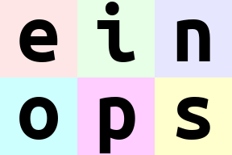
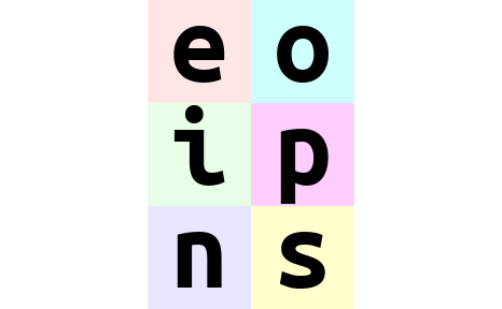
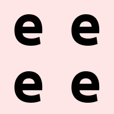
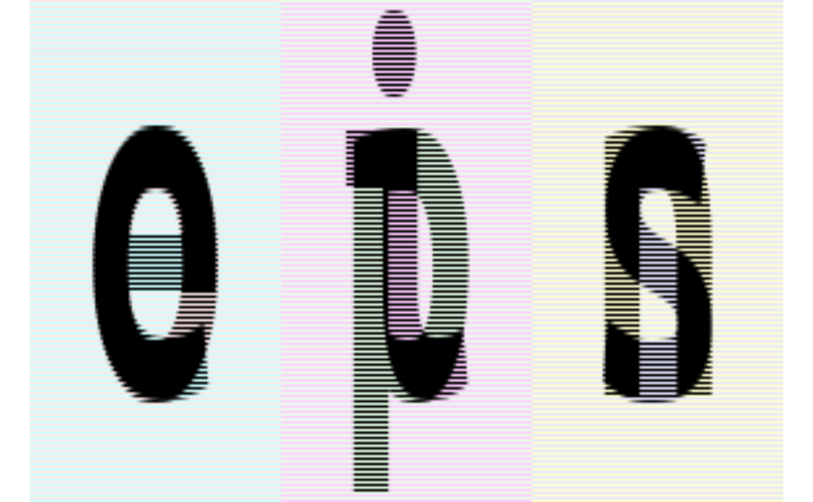
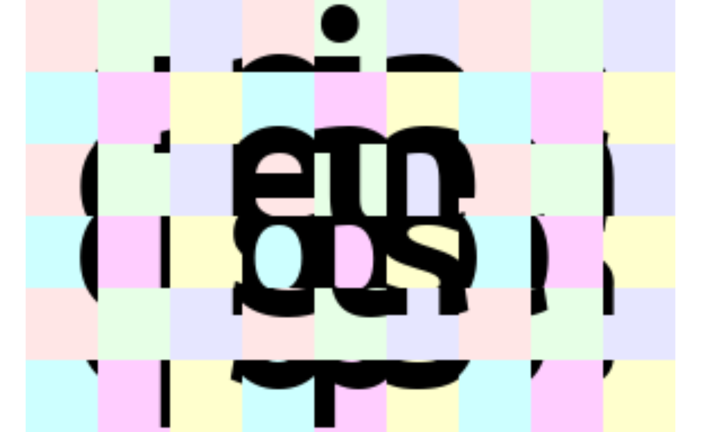

Welcome to einops-land!
We don’t write
We write comprehensible code
y <- rearrange(x, "b c h w -> b h w c")Currently, einops only supports the
base::array, and extends them. In the future, more tensor
types will be supported such as torch::torch_tensor’s.
What’s in this vignette?
- fundamentals: reordering, composition and decomposition of axes
- operations:
rearrange,reduce,repeat - how much you can do with a single operation!
Load a batch of images to play with
Here we the einops example data, an image_tensor object
- which is just a base::array with its class attribute
being c("image_tensor", "array"). The data consists of six
96x96 images with 3 color channels. The main difference with
base::array’s are that the print method by default will
show the image itself using imager.
We also set the option einops_row_major to
TRUE. This is a global option that the package uses because
native R arrays are stored in column-major order, which also affects its
indexing behaviour to be completely different compared to python’s many
row-major tensors. Using it here will make the examples much more
intuitive, as the images will be indexed by batch, height, width, and
color channels, just like in many deep learning frameworks. This option
is false by default to preserve the original R behavior, and can be
overridden anytime by setting the .row_major argument.
# display the first image (whole 4d tensor can't be rendered)
ims[1, , , ]
# second image in a batch
ims[2, , , ]
# rearrange, as the name suggests, rearranges elements
# below we swapped height and width.
# In other words, transposed first two axes (dimensions)
rearrange(ims[1, , , ], "h w c -> w h c")
# we could use more verbose names for axes, and result is the same:
rearrange(ims[1, , , ], "height width color -> width height color")
# when you operate on same set of axes many times,
# you usually come up with short names.
# That's what we do throughout this vignette - we'll use b (for batch), h, w, and cComposition of axes
Transposition is very common and useful, but let’s move to other capabilities provided by einops.
# einops allows seamlessly composing batch and height to a new height dimension
# We just rendered all images by collapsing to 3d tensor!
rearrange(ims, "b h w c -> (b h) w c")
# or compose a new dimension of batch and width
rearrange(ims, "b h w c -> h (b w) c")Decomposition of axis
# decomposition is the inverse process - represent an axis as a combination of new axes
# several decompositions possible, so b1=2 is to decompose 6 to b1=2 and b2=3
dim(rearrange(ims, "(b1 b2) h w c -> b1 b2 h w c ", b1=2))
#> [1] 2 3 96 96 3
# finally, combine composition and decomposition:
rearrange(ims, "(b1 b2) h w c -> (b1 h) (b2 w) c ", b1=2)
# slightly different composition: b1 is merged with width, b2 with height
# ... so letters are ordered by w then by h
rearrange(ims, "(b1 b2) h w c -> (b2 h) (b1 w) c ", b1=2)
# move part of width dimension to height.
# we should call this width-to-height as image width shrunk by 2 and height doubled.
# but all pixels are the same!
# Can you write reverse operation (height-to-width)?
rearrange(ims, "b h (w w2) c -> (h w2) (b w) c", w2 = 2)Order of axes matters
# compare with the next example
rearrange(ims, "b h w c -> h (b w) c")
# order of axes in composition is different
# rule is just as for digits in the number: leftmost digit is the most significant,
# while neighboring numbers differ in the rightmost axis.
# you can also think of this as lexicographic sort
rearrange(ims, "b h w c -> h (w b) c")
# what if b1 and b2 are reordered before composing to width?
rearrange(ims, "(b1 b2) h w c -> h (b1 b2 w) c ", b1=2) # produces 'einops'
rearrange(ims, "(b1 b2) h w c -> h (b2 b1 w) c ", b1=2) # produces 'eoipns'Meet einops.reduce
In einops-land you don’t need to guess what happened
if axis is not present in the output — you guessed it — axis was reduced.
# average over batch
reduce(ims, "b h w c -> h w c", "mean")
# the previous is identical to familiar:
as_image_tensor(apply(ims, c(2, 3, 4), mean))
# but is so much more readable
# Example of reducing of several axes
# besides mean, there are also min, max, sum, prod
reduce(ims, "b h w c -> h w", "min")
# this is mean-pooling with 2x2 kernel
# image is split into 2x2 patches, each patch is averaged
reduce(ims, "b (h h2) (w w2) c -> h (b w) c", "mean", h2=2, w2=2)
# max-pooling is similar
# result is not as smooth as for mean-pooling
reduce(ims, "b (h h2) (w w2) c -> h (b w) c", "max", h2=2, w2=2)
# yet another example. Can you compute the resulting shape?
reduce(ims, "(b1 b2) h w c -> (b2 h) (b1 w)", "mean", b1=2)Stack and concatenate
# rearrange can also take care of lists of arrays with the same shape
x <- lapply(1:6, function(i) ims[i, , , ])
cat("list with", length(x), "tensors of shape", paste(dim(x[[1]]), collapse=" "))
#> list with 6 tensors of shape 96 96 3
# that's how we can stack inputs
# "list axis" becomes first ("b" in this case), and we left it there
dim(rearrange(x, "b h w c -> b h w c"))
#> [1] 6 96 96 3
# but new axis can appear in the other place:
dim(rearrange(x, "b h w c -> h w c b"))
#> [1] 96 96 3 6Addition or removal of axes
You can write 1 to create a new axis of length 1. Similarly you can remove such axis.
There is also a synonym () that you can use. That’s a
composition of zero axes and it also has a unit length.
Repeating elements
Third operation we introduce is repeat, which can be
either called as einops.repeat or a tick enclosed
repeat.
# repeat along a new axis. New axis can be placed anywhere
dim(einops.repeat(ims[1, , , ], "h w c -> h new_axis w c", new_axis = 5))
#> [1] 96 5 96 3
# shortcut
dim(`repeat`(ims[1, , , ], "h w c -> h 5 w c"))
#> [1] 96 5 96 3
# repeat along w (existing axis)
`repeat`(ims[1, , , ], "h w c -> h (repeated w) c", repeated=3)
# repeat along two existing axes
`repeat`(ims[1, , , ], "h w c -> (2 h) (2 w) c")
# order of axes matters as usual - you can repeat each element (pixel) 3 times
# by changing order in parenthesis
`repeat`(ims[1, , , ], "h w c -> h (w repeated) c", repeated = 3)Note: repeat operation covers functionality identical to
base::array and abind replication and actually
more than that.
Reduce ⇆ repeat
reduce and repeat are like opposite of each other: first one reduces amount of elements, second one increases.
In the following example each image is repeated first, then we reduce over new axis to get back original tensor. Notice that operation patterns are “reverse” of each other
Fancy examples in random order
(a.k.a. mad designer gallery)
# interweaving pixels of different pictures
# all letters are observable
rearrange(ims, "(b1 b2) h w c -> (h b1) (w b2) c ", b1=2)
# interweaving along vertical for couples of images
rearrange(ims, "(b1 b2) h w c -> (h b1) (b2 w) c", b1=2)
# interweaving lines for couples of images
# exercise: achieve the same result without einops in your favourite framework
reduce(ims, "(b1 b2) h w c -> h (b2 w) c", "max", b1=2)
# color can be also composed into dimension
# ... while image is downsampled
reduce(ims, "b (h 2) (w 2) c -> (c h) (b w)", "mean")
# disproportionate resize
reduce(ims, "b (h 4) (w 3) c -> (h) (b w)", "mean")
# split each image in two halves, compute mean of the two
reduce(ims, "b (h1 h2) w c -> h2 (b w)", "mean", h1=2)
# split in small patches and transpose each patch
rearrange(ims, "b (h1 h2) (w1 w2) c -> (h1 w2) (b w1 h2) c", h2=8, w2=8)
# stop me someone!
rearrange(ims, "b (h1 h2 h3) (w1 w2 w3) c -> (h1 w2 h3) (b w1 h2 w3) c", h2=2, w2=2, w3=2, h3=2)
rearrange(ims, "(b1 b2) (h1 h2) (w1 w2) c -> (h1 b1 h2) (w1 b2 w2) c", h1=3, w1=3, b2=3)
# patterns can be arbitrarily complicated
reduce(ims, "(b1 b2) (h1 h2 h3) (w1 w2 w3) c -> (h1 w1 h3) (b1 w2 h2 w3 b2) c", "mean", h2=2, w1=2, w3=2, h3=2, b2=2)
# pixelate: first downscale by averaging, then upscale back using the same pattern
averaged <- reduce(ims, "b (h h2) (w w2) c -> b h w c", "mean", h2=6, w2=8)
`repeat`(averaged, "b h w c -> (h h2) (b w w2) c", h2=6, w2=8)
rearrange(ims, "b h w c -> w (b h) c")
# let's bring color dimension as part of horizontal axis
# at the same time horizontal axis is downsampled by 2x
reduce(ims, "b (h h2) (w w2) c -> (h w2) (b w c)", "mean", h2=3, w2=3)Summary
-
rearrangedoesn’t change number of elements and covers different R functions (likeaperm,array, etc.) -
reducecombines same reordering syntax with reductions (mean,min,max,sum,prod, and any others) -
einops.repeatadditionally covers repeating and tiling - composition and decomposition of axes are a corner stone, they can and should be used together
Bonus
The function einop() is a shorthand to do any of these
operations with this single function. See its docs for more info.